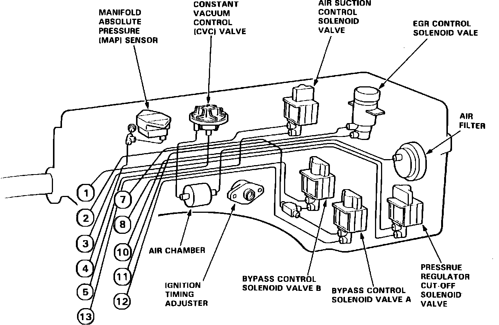

Operation CHARM
: Car repair manuals for everyone.
Home
>>
Acura
>>
1989
>>
Legend Coupe V6-2675cc 2.7L SOHC FI
>>
Repair and Diagnosis
>>
Powertrain Management
>>
Fuel Delivery and Air Induction
>>
Intake Manifold Vacuum Damper
>>
Locations
Intake Manifold Vacuum Damper: Locations
Fig. 17 Control Box:

The Constant Vacuum Control Valve is located in the control box.